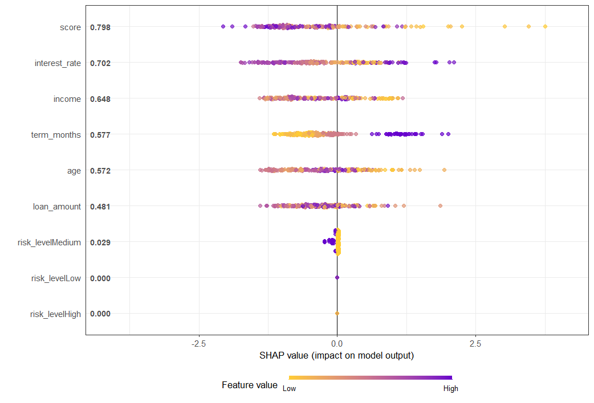
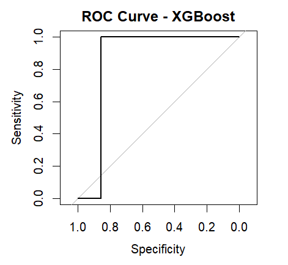
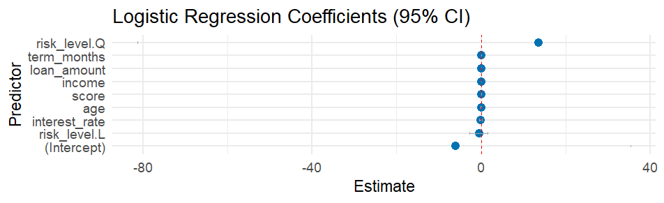
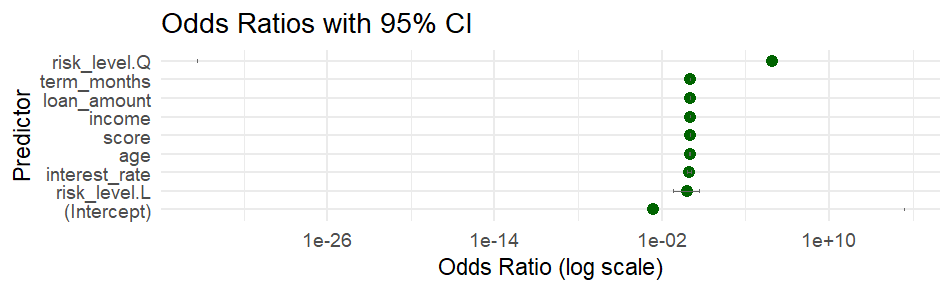
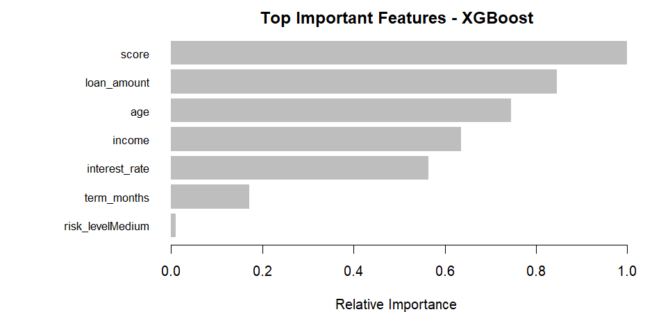
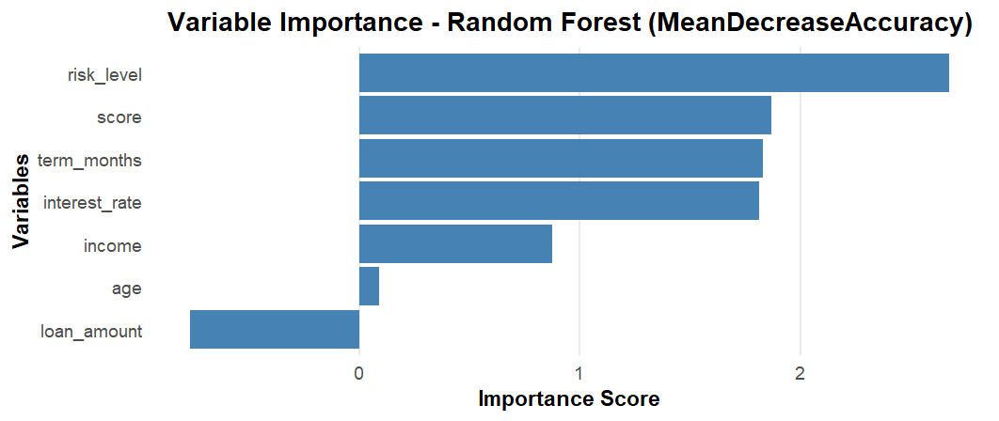
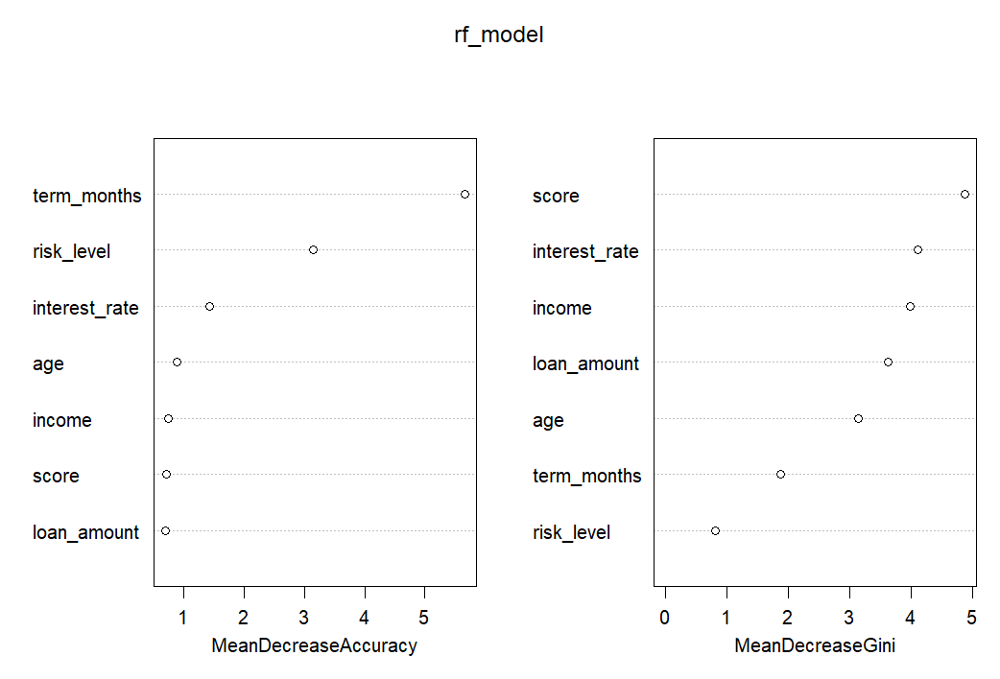
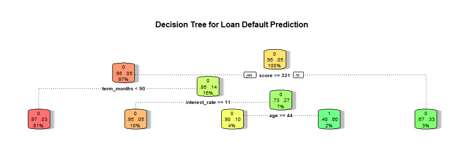

Building predictive models to identify loan default risk using machine learning classification techniques.
This project focuses on predicting loan default risk using multiple machine learning algorithms including Logistic Regression, Random Forest, XGBoost, and Decision Trees. By analyzing customer demographics, credit scores, loan amounts, interest rates, and payment behavior, we build robust models to identify high-risk borrowers before default occurs. Model interpretability is enhanced through SHAP values, feature importance analysis, and coefficient visualization.
SHAP (SHapley Additive exPlanations) values reveal how each feature contributes to the model's predictions. The plot shows that credit score is the most influential factor—higher scores (red dots) push predictions toward lower default risk, while lower scores (blue dots) increase default risk. Other key drivers include interest rate, loan amount, income, and term months. The visualization demonstrates model transparency and helps explain individual predictions to stakeholders.
Insight: SHAP provides model-agnostic interpretability, critical for regulatory compliance and business trust.
The ROC (Receiver Operating Characteristic) curve measures the XGBoost model's ability to distinguish between defaulters and non-defaulters. With an AUC (Area Under Curve) near 1.0, the model demonstrates excellent discriminative power. The curve hugs the top-left corner, indicating high sensitivity and specificity—meaning the model correctly identifies both defaulters and non-defaulters with minimal false positives or false negatives.
Insight: High AUC confirms XGBoost as the strongest performer, suitable for production deployment.
The coefficient plot shows how each feature impacts the probability of loan default in the logistic regression model. Features with positive coefficients (right side) increase default risk, while negative coefficients (left side) decrease it. Risk level (High) has the strongest positive impact, followed by interest rate and term months. Conversely, higher credit scores and income significantly reduce default probability. The 95% confidence intervals help assess coefficient reliability.
Insight: Simple, interpretable coefficients make logistic regression ideal for explaining predictions to non-technical stakeholders.
Odds ratios translate logistic regression coefficients into more intuitive risk metrics. A value greater than 1 indicates increased default odds, while values below 1 indicate decreased odds. For example, customers in the high-risk category (risk_level Q) have dramatically higher default odds (>1e+10), while customers with lower risk levels (risk_level L) show significantly reduced odds. This visualization helps quantify relative risk across different customer segments.
Insight: Odds ratios are critical for credit risk assessment and pricing strategies.
XGBoost ranks features by their contribution to model performance. Credit score dominates with the highest importance (~1.0), followed by loan amount, age, income, and interest rate. These features are repeatedly used in decision splits across the boosted trees, making them the primary drivers of prediction accuracy. Lower-ranked features like term_months and risk_levelMedium still contribute but to a lesser extent.
Insight: Focus data collection and feature engineering efforts on high-importance variables for maximum model improvement.
Random Forest measures feature importance using Mean Decrease in Accuracy—the drop in model accuracy when a feature is randomly permuted. Risk level is the most critical feature, followed by credit score, term months, and interest rate. Unlike XGBoost's gain-based importance, this metric directly reflects each feature's contribution to classification accuracy, making it highly interpretable for model evaluation.
Insight: Random Forest importance complements XGBoost findings, validating consistent feature rankings across models.
This dual-metric visualization compares two importance measures: MeanDecreaseAccuracy (left) shows prediction accuracy impact, while MeanDecreaseGini (right) measures node impurity reduction (information gain). Both metrics consistently rank score, term_months, interest_rate, and risk_level as top features. Agreement between both measures confirms robust feature importance rankings and model stability.
Insight: Dual-metric analysis strengthens confidence in feature selection and model interpretability.
The decision tree provides a visual flowchart of the classification logic. Starting from the root node, the tree splits data based on key features like term_months, score, and interest_rate. Each node shows the splitting rule, samples count, and class distribution. The color intensity indicates prediction confidence—darker green means higher confidence in non-default, while darker red indicates higher default probability. This transparent structure makes the model's decision-making process fully interpretable.
Insight: Decision trees excel in interpretability, useful for regulatory compliance and manual review processes.
The Loan Default Prediction project successfully identifies high-risk borrowers using multiple machine learning approaches:
Best Model: XGBoost achieved the highest AUC and accuracy, making it ideal for production deployment.
Key Predictors: Credit score, loan amount, interest rate, risk level, and term length are the strongest default indicators.
Model Interpretability: SHAP values, logistic regression coefficients, and decision trees provide transparent explanations for predictions.
Business Impact: Accurate default prediction reduces financial losses, optimizes credit approval processes, and enables risk-based pricing.
All models demonstrate strong predictive power with proper feature engineering, robust validation, and comprehensive interpretability analysis.
To maximize the business value of loan default prediction: